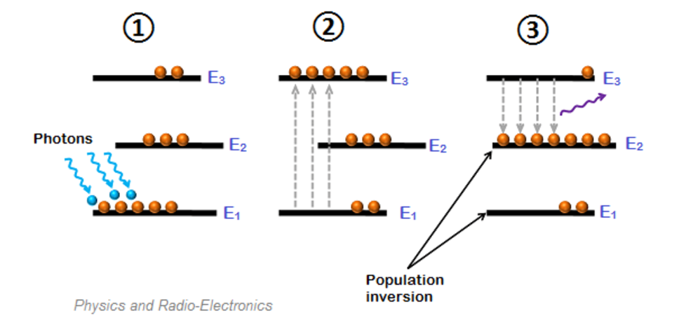
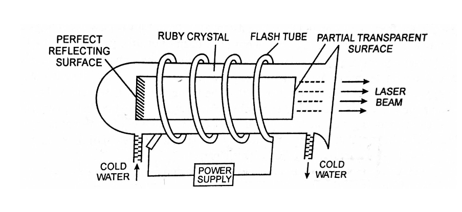
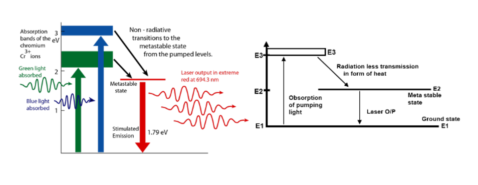
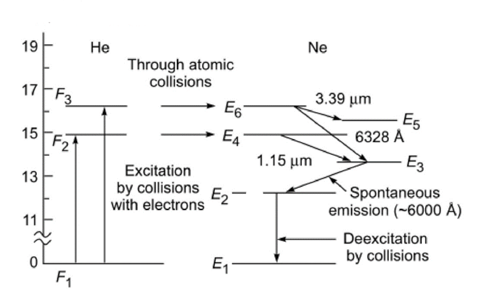

Lasers are coherent light sources which are produced through stimulated emission
The acronym LASER stands for Light Amplification by Stimulated
Emission of Radiation.
Characteristics of LASERs
Directionality (Uni directional)
High Intensity (More focused in a small area)
Mono Chromaticity (One specific color)
Coherent (High degree of coherence)
Requirements of a LASER
Population Inversion
Meta Stable State
Active Medium (Medium in which the laser action takes place)
Resonating Cavity
Pumping (Large number of e-s from lower to higher)
Population Inversion

In the resonating cavity, one mirror is fully reflected while other is only partially reflected. This actually allows
laser to come out. It is used to increase photon density by multiple reflections and is the reason for
amplification
Solid State LASER: Ruby Laser

Ruby is Al2O3 crystal with about 0.05% Chromium Atoms
In this, Cr+3 atoms are the active material.
It's ends are polished. It also has a cylindrical resonating cavity
Ruby rod acts as an optical resonator
It is surrounded by a helical Xenon Flash Lamp used for pumping

This is a spontaneous emmision (6934 arm - red)
Here, E2 is the meta stable state. Cr undergoes non radiative transmission.
After this process, a photon is released which further excites the down atom. (1.79 ev)
The output is not continues but pulsed.
Helium Neon LASER
More focused and have sharp energy levels.
Consists of a long discharge tube connected to a high 10kv voltage
Laser action is due to neon gas and they are excited by helium gas
Once again, one mirror is partially reflecting whereas the other is reflecting

When switched is on, electrons and ions produced in the discharge tube collide with helium and neon atoms
Helium gets more easily excited then Neon
Energy levels F2, F3 of Helium are close to E4, E6 of Neon
When helium atoms collide with neon atoms, they transfer energy. This is called resonant energy transfer
E6 is the meta stable state and transitions from E6 to E3 produce wavelength 6328A
Other wavelengths are eliminated
Semi Conductor Laser
Semiconductor lasers are of two types. Except the Construction, Principle and working are same for both.
Homojunction semiconductor Laser (Same Band gap energies)
Hetrojunction semiconductor Laser (Different Band gap energies)
Instead of laser light being generated from energy levels, transitions take place from valence to conduction
band
Laser light is produced due to recombination of electrons and holes at pn-junction when current is passed
through the diode.
Laser light is due to stimulated emission.
When current is passed through pn junction under forward bias, the injected electrons and holes will increase
the density of electrons in CB and holes in VB.
As the current is further increased at some threshold value of current the amplification will takes place and
laser begin to emit coherent radiation.
The properties of semi conductor laser depend upon the energy gap.